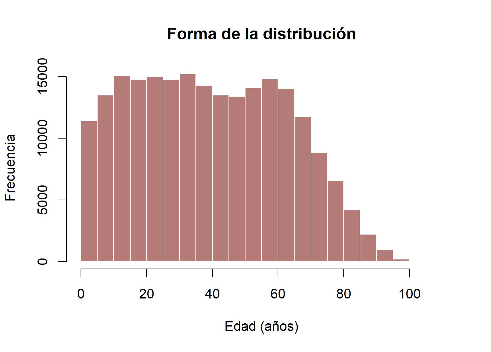
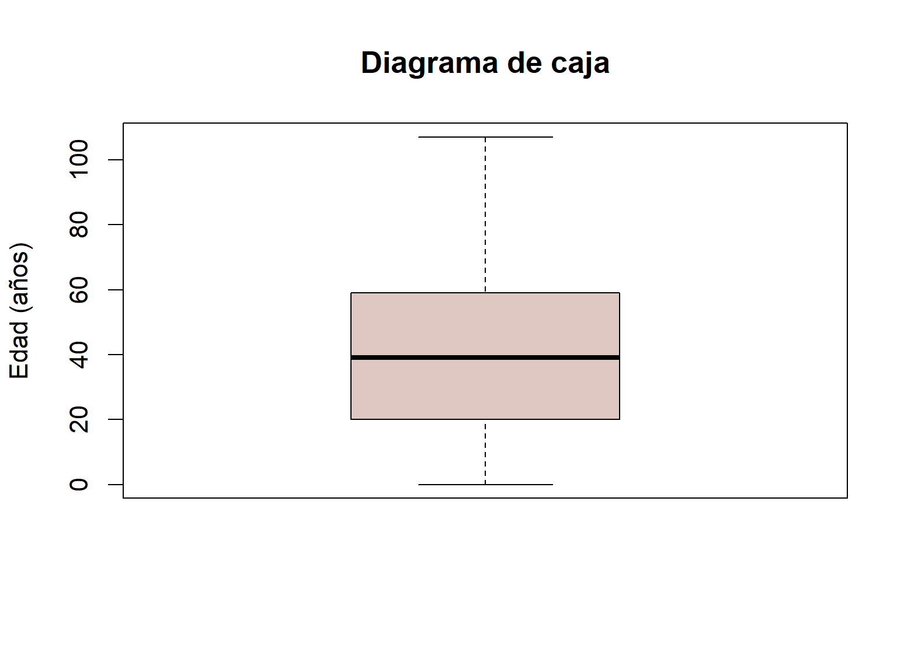

Práctico — Estadística descriptiva con R
Práctico integral de las clases 04–08: procesamiento, distribuciones, frecuencias, tendencia central, dispersión, posición y forma con CASEN 2024.
Taller de Software · Unidad III
Estadística descriptiva con R y CASEN 2024
Práctico integral de las clases 04–08: procesamiento, distribuciones, frecuencias, tendencia central, dispersión, posición y forma con CASEN 2024.
En este práctico usaremos R y una selección de datos reales de CASEN 2024. Aprenderemos a cargar la base, explorar variables, calcular medidas descriptivas y representar distribuciones mediante tablas y gráficos.
Note¿Qué aprenderemos?
Al finalizar podrá cargar y explorar datos, construir tablas de frecuencias, calcular medidas de tendencia central, dispersión y posición, e interpretar histogramas y diagramas de caja. También reconocerá la asimetría, la curtosis y los límites de los resultados obtenidos.
1. Descarguemos y carguemos los datos
- En su computador, cree una carpeta llamada
practico_estadisticay ábrala como proyecto o carpeta de trabajo en Positron o RStudio. - Dentro de ella, cree la subcarpeta
datos. - Use el botón Descargar base CASEN 2024 de esta página y guarde
casen_2024_udp.RDatadentro dedatos. - Abra un script nuevo de R y guárdelo como
practico.Renpractico_estadistica. - Copie los bloques de código en R a ese script y ejecútelos en el orden en que aparecen. Los comentarios
#explican cada instrucción; R no los ejecuta.
practico_estadistica/
├── datos/
│ └── casen_2024_udp.RData
└── practico.RCarguemos el archivo en R
En Positron o RStudio, coloque el cursor sobre una línea del script y presione Ctrl + Enter para ejecutarla. Los resultados numéricos aparecerán en la consola; los gráficos, en el panel de visualización.
objetos_cargados <- load("datos/casen_2024_udp.RData") # Cargamos el archivo.
objetos_cargados # Vemos el nombre del objeto cargado.
ls() # Listamos los objetos disponibles en R.Compruebe el resultado: objetos_cargados debe mostrar sub_casen_2024. El archivo contiene 218.367 filas y seis columnas. El símbolo <- asigna el resultado de una operación a un objeto que podrá reutilizar después.
datos_originales <- sub_casen_2024 # Asignamos un nombre corto a la base.
class(datos_originales) # Revisamos el tipo de objeto.
dim(datos_originales) # Vemos cuántas filas y columnas tiene.
CautionSi R no encuentra el archivo
Si R muestra «No such file or directory», compruebe que el archivo se llame casen_2024_udp.RData y esté dentro de la carpeta datos. Ejecute getwd() para ver desde qué carpeta busca R. Si aparece «object not found», revise que haya ejecutado los bloques anteriores en orden.
2. Reconozcamos una matriz de datos
En una matriz de datos, cada fila corresponde a un caso (aquí, una persona registrada) y cada columna a una variable, como edad o sexo. Ejecute los siguientes comandos para reconocer ambas dimensiones. El libro de códigos permite saber qué significa cada variable y cómo se codificaron sus respuestas.
head(datos_originales) # Mostramos las primeras filas.
names(datos_originales) # Consultamos los nombres de las variables.
str(datos_originales) # Revisamos cómo está guardada cada columna.En el chat de Zoom: indique un ejemplo de variable que aparezca en names(datos_originales) y explique, en una frase, para qué serviría consultar su libro de códigos.
Seleccionemos una base de trabajo
Trabajaremos principalmente con edad y sexo. La primera expresa años cumplidos; la segunda contiene categorías codificadas. Seleccionaremos estas dos columnas sin modificar la base original. Más adelante usaremos también esc (años de escolaridad).
datos <- datos_originales[c("edad", "sexo")] # Seleccionamos dos columnas.
dim(datos) # Verificamos las dimensiones de la nueva base.
head(datos) # Observamos las primeras filas.
str(datos) # Revisamos los tipos de las dos variables.Los corchetes [ ] seleccionan partes de la base; c() reúne los nombres de las columnas elegidas. El símbolo $ permite acceder a una variable, por ejemplo datos$edad. Compruebe: ¿se mantuvo el número de filas? ¿Cuántas columnas quedan?
Revisemos la calidad de la información
summary(datos$edad) # Resumimos las edades observadas.
sum(is.na(datos$edad)) # Contamos las edades sin dato (NA).NA representa un dato faltante. is.na() identifica esos casos y sum() permite contarlos. Observe: ¿cuántas edades faltan en esta base? Un valor faltante o extremo no debe eliminarse sin revisar su significado.
ImportantMuestra no es población
Un estadístico resume los registros analizados; un parámetro describe a una población. Aquí calcularemos medidas sin ponderar sobre 218.367 registros de CASEN. Aunque provienen de una encuesta real, no son estimaciones representativas de Chile: para ello deben considerarse el diseño muestral y los factores de expansión.
| Concepto | Pregunta para aplicar a CASEN |
|---|---|
| Universo y población | ¿A qué conjunto de personas busca describir el estudio? Consulte la ficha técnica antes de responder. |
| Muestra | ¿Quiénes efectivamente respondieron? ¿Por qué una muestra no equivale a toda la población? |
| Parámetro y estadístico | ¿Una media calculada con registros de la base es por sí misma un parámetro poblacional? |
| Muestreo probabilístico y no probabilístico | ¿Por qué importa cómo se seleccionan las observaciones? |
| Recolección y codificación | ¿Cómo pasa una respuesta del cuestionario a un código en una columna? |
Procesar también es crear nuevas variables
datos$es_mayor_edad <- datos$edad >= 18 # TRUE si tiene 18 años o más.
table(datos$es_mayor_edad, useNA = "ifany") # Contamos TRUE, FALSE y NA.Compruebe: ahora datos contiene una columna nueva. TRUE significa «sí cumple» y FALSE, «no cumple». ¿Qué pasaría si la edad de una persona fuera NA?
3. Exploremos las distribuciones y frecuencias
Una distribución muestra qué valores o categorías aparecen y con qué frecuencia. Para variables nominales es útil una tabla o barras; para variables ordinales, también podemos acumular porcentajes respetando el orden; para variables cuantitativas, suelen ser útiles histogramas y medidas numéricas.
¿Cuántas respuestas hay en cada categoría?
Código en R
tabla_sexo <- table(as.numeric(datos$sexo)) # Contamos cada código de sexo.
tabla_sexo # Mostramos las frecuencias absolutas.
porcentaje_valido <- prop.table(tabla_sexo) * 100 # Calculamos porcentajes.
porcentaje_valido # Mostramos los porcentajes válidos.Resultado calculado al publicar
| Código | Etiqueta original | Frecuencia | Porcentaje válido |
|---|---|---|---|
| 1 | Hombre | 103616 | 47.5% |
| 2 | Mujer | 114751 | 52.5% |
Respuestas sin dato (NA): 0.
La tabla muestra frecuencias absolutas (número de casos) y porcentajes válidos (proporción de respuestas disponibles). as.numeric() permite contar los códigos de sexo sin alterar la columna original, que conserva sus etiquetas. Los resultados del sitio se muestran redondeados; la consola de R puede ofrecer más decimales.
Interprete: ¿qué categoría reúne más registros? ¿Por qué no tendría sentido calcular la media de los códigos de sexo? Una distribución puede ser unimodal, bimodal o multimodal según cuántos valores compartan la frecuencia máxima.
¿Por qué el porcentaje puede cambiar si faltan respuestas?
tabla_con_faltantes <- table(as.numeric(datos$sexo), useNA = "ifany") # Incluimos NA.
porcentaje_total <- prop.table(tabla_con_faltantes) * 100 # Porcentaje sobre el total.
porcentaje_total # Observamos el porcentaje obtenido.
sum(is.na(datos$sexo)) # Contamos las respuestas faltantes.En sexo no hay NA, por lo que los porcentajes válidos y totales coinciden. Para ver una diferencia real de denominadores, utilice esc, que sí tiene datos faltantes:
tabla_esc <- table(datos_originales$esc) # Contamos años de escolaridad válidos.
porc_esc_valido <- prop.table(tabla_esc) * 100 # Dividimos por respuestas válidas.
porc_esc_total <- tabla_esc / nrow(datos_originales) * 100 # Dividimos por todos.
head(round(porc_esc_valido, 1)) # Observamos algunos porcentajes válidos.
head(round(porc_esc_total, 1)) # Observamos los mismos valores sobre el total.Compare: ¿qué porcentajes son mayores? na.rm = TRUE, que aparecerá más adelante, indica a R que omita NA del cálculo, no que los borre de la base. La presencia de faltantes debe interpretarse considerando a quién se aplicó la pregunta.
De la tabla al gráfico
barplot(
tabla_sexo, # Frecuencias de cada código.
main = "Frecuencias de sexo", # Título del gráfico.
xlab = "Código de respuesta", # Eje horizontal.
ylab = "Frecuencia", # Eje vertical.
col = "#a35a5a" # Color de las barras.
)Observe: en un gráfico de barras las categorías aparecen separadas. En un histograma, los intervalos de una variable numérica aparecen contiguos. ¿Por qué no sería apropiado utilizar un histograma para los códigos de sexo?
Hagamos una variable ordinal y acumulemos porcentajes
Agruparemos las edades en tramos ordenados para practicar porcentajes acumulados. Los tramos son una variable creada para este ejercicio: simplifican las edades exactas y, por tanto, pierden detalle.
datos$tramo_edad <- cut(
datos$edad, # Edades que agruparemos.
breaks = c(0, 18, 30, 60, Inf), # Límites de los tramos.
labels = c("0–17", "18–29", "30–59", "60 o más"),
right = FALSE, # Incluimos el límite inferior.
ordered_result = TRUE # Mantenemos el orden de los tramos.
)
tabla_tramos <- table(datos$tramo_edad) # Contamos personas por tramo.
tabla_tramos # Revisamos la tabla.porcentaje_tramos <- prop.table(tabla_tramos) * 100 # Porcentajes válidos.
porcentaje_tramos # Vemos cada porcentaje.
porcentaje_acumulado <- cumsum(porcentaje_tramos) # Sumamos en orden.
porcentaje_acumulado # Vemos la acumulación.Interprete: ¿qué proporción de los registros tiene menos de 30 años? Localice la respuesta acumulando los dos primeros tramos. ¿Por qué ese cálculo exige categorías ordenadas?
Distribuciones empíricas y teóricas
Las frecuencias observadas en CASEN forman una distribución empírica. En cambio, la distribución normal y otros modelos (exponencial, chi-cuadrado o beta) son distribuciones teóricas. Una normal es simétrica y tiene forma de campana; en su forma ideal, media, mediana y moda coinciden. Tener muchos registros no significa que la edad deba seguir una distribución normal.
4. Busquemos el centro de una distribución
¿Qué número elegiría para resumir las edades de la base? Calcularemos primero dos medidas de centro y compararemos su información.
Media y mediana
Código en R
media_edad <- mean(datos$edad, na.rm = TRUE) # Calculamos la media.
media_edad # Mostramos el resultado.
mediana_edad <- median(datos$edad, na.rm = TRUE) # Calculamos la mediana.
mediana_edad # Mostramos el resultado.Resultado calculado al publicar
| Medida | Valor |
|---|---|
| Media (años) | 39.92 |
| Mediana (años) | 39.00 |
La media es el promedio aritmético; la mediana divide los valores ordenados en dos mitades. na.rm = TRUE omite los valores faltantes del cálculo. Compare: ¿cuál de estas dos medidas es mayor en CASEN? ¿Cuál se afecta menos por edades extremas?
¿Y la moda?
La moda es el valor que más se repite. En R, mode() no calcula la moda estadística: informa el modo de almacenamiento del objeto. Para encontrarla, contaremos las frecuencias.
tabla_edad <- table(datos$edad) # Contamos cuántas veces aparece cada edad.
frecuencia_moda <- max(tabla_edad) # Buscamos la frecuencia más alta.
frecuencia_moda # Vemos cuántos registros tiene esa frecuencia.
tabla_edad[tabla_edad == frecuencia_moda] # Localizamos la edad o edades modales.Compruebe: ¿puede obtenerse la moda de sexo? ¿Y su media? Explique qué permite interpretar cada tipo de variable.
| Medida | ¿Qué resume? | ¿Para qué variables? | ¿Qué limitación tiene? |
|---|---|---|---|
| Moda | Categoría o valor más frecuente | Nominales, ordinales y numéricas | Puede haber varias modas |
| Mediana | Posición central | Ordinales y cuantitativas | No muestra la dispersión |
| Media | Promedio aritmético | Cuantitativas; ordinales solo con justificación especial | Sensible a valores extremos |
La media se calcula como ({x}=): se suman los valores válidos (x_i) y se dividen por su cantidad (n). R efectúa este cálculo mediante mean().
5. Desafío: detectives de datos
Desafío: tenemos que elegir cómo describir la distribución de edades usando evidencia, no solamente una impresión.
Primera votación en Zoom. Lea las tres afirmaciones y escriba A, B o C en el chat, antes de ejecutar el siguiente código. La profesora pedirá a algunas personas que expliquen brevemente su elección.
- A. «La edad promedio basta para describir cómo se distribuyen las edades».
- B. «Además de la media, necesitamos mirar la mediana, la dispersión y la distribución».
- C. «La mediana siempre es mejor que la media, sin importar cómo sean los datos».
Ahora compruebe su respuesta: ejecute los comandos siguientes y observe los valores y el histograma. La profesora conducirá la comparación de las respuestas en la sesión principal de Zoom; no es necesario abrir salas separadas.
Comprobemos lo que sabemos
mean(datos$edad, na.rm = TRUE) # Calculamos la media.
median(datos$edad, na.rm = TRUE) # Calculamos la mediana.
range(datos$edad, na.rm = TRUE) # Vemos la menor y mayor edad.hist(
datos$edad, # Edades que analizaremos.
main = "Distribución de edades", # Título del gráfico.
xlab = "Edad (años)", # Eje horizontal.
ylab = "Frecuencia", # Eje vertical.
col = "#b47b78", # Color de las barras.
border = "white" # Separación entre barras.
)Segunda votación: después de observar los resultados, vuelva a escribir A, B o C en el chat. Justifique su elección con un valor (media o mediana) y una observación del histograma. ¿Cambió su respuesta? ¿Por qué?
Si no puede ejecutar R: utilice la tabla de media y mediana de esta página y el histograma publicado en la sección 8. Podrá participar en la votación y la discusión igualmente; la profesora revisará las conclusiones con el curso.
6. ¿Cuánto varían los datos?
La dispersión nos indica qué tan extendidos están los valores. Dos conjuntos de datos pueden tener promedios similares y distinta variabilidad.
Del mínimo y el máximo al rango
min(datos$edad, na.rm = TRUE) # Edad mínima.
max(datos$edad, na.rm = TRUE) # Edad máxima.
amplitud_edad <- max(datos$edad, na.rm = TRUE) - # Calculamos el rango.
min(datos$edad, na.rm = TRUE)
amplitud_edad # Mostramos la diferencia entre ambos extremos.Varianza y desviación estándar
Código en R
varianza_edad <- var(datos$edad, na.rm = TRUE) # Varianza en años².
varianza_edad # Mostramos la varianza.
desviacion_edad <- sd(datos$edad, na.rm = TRUE) # Desviación en años.
desviacion_edad # Mostramos la desviación estándar.Resultado calculado al publicar
| Medida | Valor |
|---|---|
| Varianza (años²) | 527.66 |
| Desviación estándar (años) | 22.97 |
Interprete: ¿por qué es más sencillo comunicar una desviación estándar en años que una varianza en años al cuadrado? Una desviación estándar de cierto valor no significa que todas las edades estén entre media menos ese valor y media más ese valor.
Para seguir practicando: más adelante incorporará esc a la base de trabajo. Después de revisar su codificación, calcule sd(datos$esc, na.rm = TRUE) y range(datos$esc, na.rm = TRUE). Interprete ambas medidas en años de escolaridad, sin comparar directamente desviaciones estándar expresadas en unidades distintas.
Fórmulas de consulta. En una muestra, (s^2=), y (s=). La primera es la varianza muestral y la segunda, la desviación estándar muestral; var() y sd() implementan estas medidas en R. Una puntuación atípica puede aumentar mucho ambas.
7. ¿Dónde se ubica un dato? Cuartiles y percentiles
La media indica un centro aritmético; los cuantiles describen posiciones. El percentil 50 coincide con la mediana bajo la convención de cálculo usual de R.
Cuartiles de edad
Código en R
cuartiles <- quantile(
datos$edad, # Edades observadas.
probs = c(0.25, 0.50, 0.75), # Cortes del 25%, 50% y 75%.
na.rm = TRUE # Excluimos faltantes.
)
cuartiles # Mostramos Q1, Q2 y Q3.Resultado calculado al publicar
| Cuartil | Edad (años) |
|---|---|
| Q1 (25%) | 20.00 |
| Q2 (50%) | 39.00 |
| Q3 (75%) | 59.00 |
Q1 es el punto de corte del 25%, Q2 corresponde a la mediana y Q3 al 75% de la distribución ordenada, aproximadamente. Con datos repetidos, los porcentajes exactos pueden variar. Interprete: ¿qué significa el valor de Q3 expresado en años?
Percentiles 10 y 90
percentiles <- quantile(
datos$edad, # Edades observadas.
probs = c(0.10, 0.90), # P10 y P90.
na.rm = TRUE # Excluimos faltantes.
)
percentiles # Vemos los puntos de corte.Interprete: ejecute el código y lea el valor de P90. ¿Qué le dice sobre la edad bajo la cual se ubica aproximadamente el 90% de los registros? No significa «90% de edad».
Quintiles y deciles
quintiles <- quantile(
datos$edad, # Edades.
probs = c(0.20, 0.40, 0.60, 0.80), # Cuatro cortes de quintiles.
na.rm = TRUE # Sin NA.
)
quintiles # Mostramos los quintiles.
deciles <- quantile(
datos$edad, # Edades.
probs = seq(0.10, 0.90, 0.10), # Nueve cortes de deciles.
na.rm = TRUE # Sin NA.
)
deciles # Mostramos los deciles.Los cuartiles, quintiles y deciles definen puntos de corte para dividir una distribución ordenada en cuatro, cinco y diez partes, respectivamente. quantile() calcula esos cortes; no asigna automáticamente un grupo a cada persona. Cuando hay valores iguales, los grupos podrían no tener exactamente el mismo tamaño.
¿Qué es el rango intercuartílico?
rango_intercuartilico <- IQR(datos$edad, na.rm = TRUE) # Calculamos Q3 − Q1.
rango_intercuartilico # Vemos el resultado.Compare: ¿qué medida cambiaría más si apareciera una edad extrema: el rango total o el rango intercuartílico? Explique la diferencia entre ambos.
8. Histograma, asimetría, curtosis y boxplot
La forma importa: dos distribuciones pueden tener un centro similar y formas diferentes. No todas las distribuciones tienen una forma normal.
¿La distribución es simétrica?
Código en R
hist(
datos$edad, # Variable cuantitativa.
main = "Forma de la distribución", # Título.
xlab = "Edad (años)", # Eje horizontal.
ylab = "Frecuencia", # Eje vertical.
col = "#b47b78", # Color de las barras.
border = "white" # Separación entre barras.
)Resultado calculado al publicar
Observe el histograma: ¿en qué edades se concentran más casos? ¿Hay una cola más larga hacia edades bajas o altas? La asimetría positiva tiene una cola más extendida hacia valores altos; la negativa, hacia valores bajos. Una distribución simétrica muestra lados aproximadamente equilibrados.
Leer un diagrama de caja
Código en R
boxplot(
datos$edad, # Edades que analizaremos.
main = "Diagrama de caja", # Título.
ylab = "Edad (años)", # Unidad del eje vertical.
col = "#dfc8c2" # Color de la caja.
)Resultado calculado al publicar

Ubique en el boxplot: la línea de la mediana, los bordes de la caja (cuartiles), los bigotes y los posibles puntos aislados. En R, los bigotes llegan hasta las observaciones más extremas dentro de los límites de 1,5 veces el rango intercuartílico desde la caja; no necesariamente hasta el mínimo y máximo. Los puntos exteriores son potencialmente atípicos, no errores automáticamente.
¿Qué muestra la curtosis?
La curtosis resume aspectos del peso de las colas y la presencia de valores extremos, especialmente al comparar con la normal. No basta con describirla como «lo puntiaguda que es la campana». La curtosis en exceso de la normal es cero; distintas funciones y paquetes pueden usar convenciones diferentes. Para este nivel, comenzaremos interpretando conceptualmente el histograma y el boxplot, sin aprender un paquete adicional solo para calcular un coeficiente.
Comparación conceptual. Dos distribuciones pueden tener media y desviación estándar semejantes, pero comportamientos muy distintos en las colas. ¿Qué información adicional revisaríamos antes de decidir que se parecen? ¿Puede un histograma por sí solo dar el valor exacto de la curtosis?
Volvamos a mirar los cuartiles junto al boxplot
quantile(datos$edad, probs = c(0.25, 0.50, 0.75), na.rm = TRUE) # Cuartiles.
IQR(datos$edad, na.rm = TRUE) # Rango entre Q3 y Q1.Nota de lectura: quantile() y boxplot() pueden utilizar convenciones ligeramente distintas para definir los extremos de la caja, especialmente con pocos casos. Una diferencia pequeña no significa necesariamente que el código esté mal.
| Recurso | Qué enseña | Error común que debemos evitar |
|---|---|---|
| Percentil 90 | Punto de corte aproximadamente por debajo del cual queda el 90% de casos | Interpretarlo como «90% de la variable» |
| Cuartiles | Posición de Q1, Q2 y Q3 | Confundir puntos de corte con porcentajes |
| Quintiles / deciles | Cortes en cinco o diez partes | Creer que quantile() ya clasificó personas en grupos |
| Asimetría | Dirección de la cola | Confundir asimetría positiva con «hay más personas a la derecha» |
| Curtosis | Peso de colas y extremos | Reducirla solo a la altura del pico |
| Boxplot | Centro, rango intercuartílico y puntos atípicos | Interpretar cada punto como un dato erróneo |
Escolaridad: una segunda variable (solo si está documentada)
La variable esc registra años de escolaridad y tiene observaciones faltantes. Incorpórela a datos, compruebe sus valores y consulte el libro de códigos antes de interpretarla. Si encuentra algún código poco claro, pregunte a la profesora.
datos$esc <- datos_originales$esc # Agregamos escolaridad ya documentada.
summary(datos$esc) # Revisamos valores y faltantes.
table(datos$esc, useNA = "ifany") # Contamos códigos y NA.Para seguir practicando: después de verificar sus valores, calcule la media y mediana de esc. ¿Cuál es mayor? No interprete códigos especiales como si fueran años de escolaridad.
9. Actividad integradora para continuar después de la clase
Para realizar después de la clase: utilice edad o esc (si ya verificó su codificación). En su script, genere una medida de centro, una de dispersión, dos percentiles y un gráfico. Escriba cinco líneas que expliquen los resultados y una limitación metodológica.
Puede seguir este orden: comprobar valores y NA → calcular medidas → elaborar el gráfico → interpretar. No generalice los resultados sin ponderar a toda la población de Chile.
Para cerrar: ¿qué medida usaría para encontrar la categoría más frecuente? ¿Qué medida resume la mitad central de una variable cuantitativa?
10. Ticket de salida
Responda en el chat de Zoom con una frase breve para cada pregunta:
- ¿Qué diferencia hay entre un porcentaje válido y un porcentaje sobre todos los casos?
- ¿Qué estadístico cambiaría más ante un valor extremo: media o mediana? ¿Por qué?
- ¿Qué significa el percentil 75 de una variable?
- En un boxplot, ¿un punto fuera de los bigotes significa necesariamente que alguien ingresó un dato mal?
Antes de terminar: guarde practico.R. Debe conservar el código, los comentarios y las instrucciones necesarias para repetir el análisis. Un resultado es reproducible cuando podemos explicar cómo se obtuvo.
Preguntas, dudas y comentarios
El canal de consultas y comentarios de la sesión estará habilitado durante el desarrollo del curso.